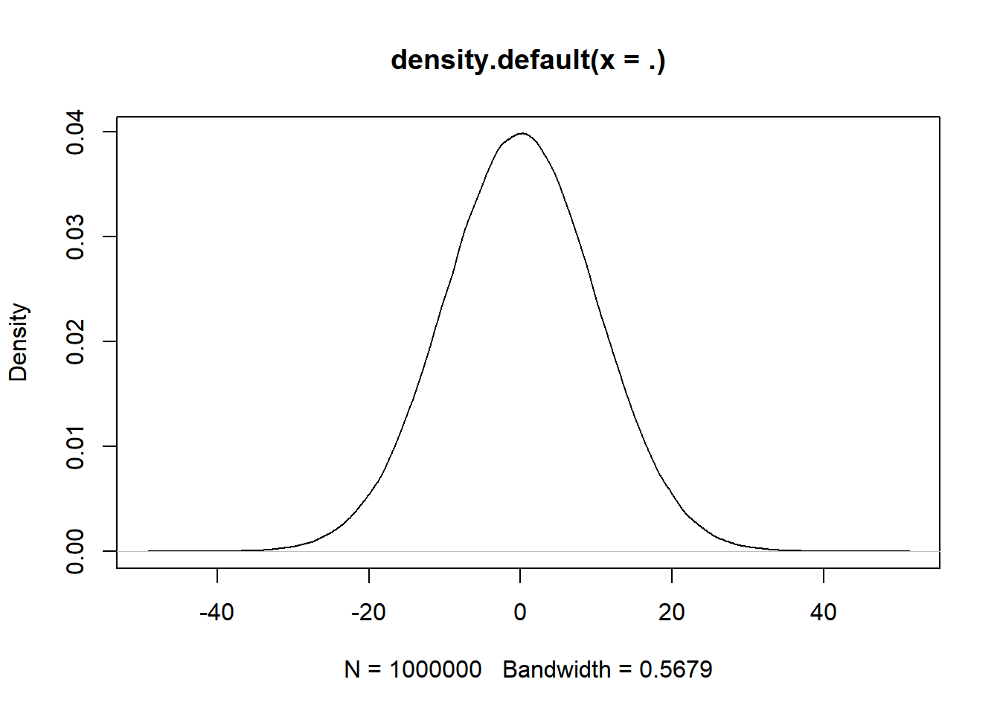

── Attaching core tidyverse packages ──────────────────────── tidyverse 2.0.0 ──
✔ dplyr 1.1.0 ✔ readr 2.1.4
✔ forcats 1.0.0 ✔ stringr 1.5.0
✔ ggplot2 3.4.2 ✔ tibble 3.2.1
✔ lubridate 1.9.2 ✔ tidyr 1.3.0
✔ purrr 1.0.1
── Conflicts ────────────────────────────────────────── tidyverse_conflicts() ──
✖ dplyr::filter() masks stats::filter()
✖ dplyr::lag() masks stats::lag()
ℹ Use the conflicted package (<http://conflicted.r-lib.org/>) to force all conflicts to become errors
Statistical Analysis
Purpose and examples of performing statistical analysis
flowchart TD
A(데이터 수집 및 특성 파악) --> B(데이터 특성 상세화 <br> - 분석 방향 설정)
B --> |데이터 두개 이상| C( - 분할표 작성<br> - 데이터 사이 의존 관계 분석<br> :카이제곱, 피셔 검정<br> - 특정 분포를 따르는지 분석<br> :콜모고로프-스미노프, <br>샤피로 윌크 검정)
B -->|데이터가 한개| D(통계 분석 작업 수행)
C-->D
D --> E(차이검정<br> - T-test, ANOVA, 비율, 부호, 맥나마 검정)
D --> F(인과관계<br> - 상관계수 및 상관분석)
통계 분석을 수행하는 목적
차이 검정은 어떤 그룹, 집단, 형태가 차이가 있는지를 알아보는 것입니다.
샘플로 뽑은 데이터가 전체 모집단을 대표한다고 볼 수 있는지를 겁정합니다. 만약 대표한다면, 샘플에서 얻은 데이터로 모집단을 예측할 수 있습니다.
약을 먹기 전과 후의 환자 상태를 조사한 후에, 이것이 차이가 있는지를 검정합니다. 이것을 통하여 약이 효과가 있는지 없는지를 알 수 있습니다.
인과 관계는 어떤 그룹 사이 인과관계(상관관계)가 있는지를 알아보는 것입니다.
상관관계가 있다면 한쪽에 변화에 대하여 다른쪽의 변화를 예측할 수 있습니다.
통계에서 사용하는 데이터 유형
범주형 데이터(Categorical Data) : 사전에 정해진 특정 유형으로 분류되는 데이터
명목형 데이터
성별, 좌파/우파
순서형 데이터 : 분류된 데이터 사이
대/중/소, A/B/C
연속형 데이터
등간 척도
온도, 시간 등
비율 척도
키, 몸무게, 점수, 관찰 빈도 등
표본 만들기 및 기초통계량
난수생성 & 분포함수 그리기
정규 분포를 따르는 난수를 생성하고 확률 밀도 함수를 그려 보겠습니다.
# 평균 0, 표준편차 10인 난수를 1000000개 생성rnorm(1000000,0,10) %>%density() %>%plot()

표본추출 방법
단순 표본 추출
# 1 ~ 10 중에 2개 추출sample(1:10, 2, replace =TRUE)
[1] 9 9
층화 임의 추출
iris 데이터 속 종별로 3개씩 추출
library(sampling)# srswor : 복원 단순 임의 추출strata(c("Species"), size =c(3,3,3), method ="srswor", data=iris)
Sepal.Length Sepal.Width Petal.Length Petal.Width
Min. :4.300 Min. :2.000 Min. :1.000 Min. :0.100
1st Qu.:5.100 1st Qu.:2.800 1st Qu.:1.600 1st Qu.:0.300
Median :5.800 Median :3.000 Median :4.350 Median :1.300
Mean :5.843 Mean :3.057 Mean :3.758 Mean :1.199
3rd Qu.:6.400 3rd Qu.:3.300 3rd Qu.:5.100 3rd Qu.:1.800
Max. :7.900 Max. :4.400 Max. :6.900 Max. :2.500
Species
setosa :50
versicolor:50
virginica :50
분할표
x <-c('A','B','C','D','D','A','A','A','C','B','C') %>%factor()# 각 데이터별 빈도수수table(x)
x
A B C D
4 2 3 2
독립성 및 적합성 검정
데이터에 대한 분할표가 구성되었다면, 이것을 대상으로 독립성 검정과 적합도 검정을 수행할 단계입니다.
독립성검정
카이제곱 검정(Chi-squared test)
검정하려고 하는 가설은 “child1과 child2가 가지고 있는 장난감 비율 차이가 있는가?” 입니다. 즉, 분할표를 구성한 데이터 두개 사이 상호 연관이 있는지를 검정하는 것입니다.
toy <-data.frame(child1 =c(5,11,1),child2 =c(4,7,3),row.names =c("car","truck","doll"))toy
child1 child2
car 5 4
truck 11 7
doll 1 3
chisq.test(toy)
Warning in chisq.test(toy): 카이제곱 approximation은 정확하지 않을수도 있습니다
Pearson's Chi-squared test
data: toy
X-squared = 1.7258, df = 2, p-value = 0.4219
귀무가설 H0 : child1 = child2 (차이가 없다)
대립가설 H1 : child1 =/= child2 (차이가 있다)
p-value가 0.05보다 크기 때문에 귀무가설을 채택한다. 즉, “아이에 따라 장난감 비율 차이가 없다”고 볼 수 있다.
피셔 검정(Fisher test)
피셔 검정은 표본 수가 적거나 분할표가 치우치게 분포된 경우에 적용하는 검정입니다.
앞에서 카이제곱 검정을 했지만 경고가 떴으므로 정확한 결과를 위하여 피셔 검정을 수행합니다.
fisher.test(toy)
Fisher's Exact Test for Count Data
data: toy
p-value = 0.5165
alternative hypothesis: two.sided
p-value가 0.05보다 크기 때문에 귀무가설을 채택한다. 즉, “아이에 따라 장난감 비율 차이가 없다”고 볼 수 있다.
ex) 냉장고 제품 A,B,C의 시장 점유율은 A가 55%, B가 15%, C가 30% 이다. 특정 지역 냉장고 제품 보유수를 조사하니, 각 320, 80, 265 였다. 이때, 특정 지역의 냉장고 보유 비율이 시장 점유율과 같다고 볼 수 있는가?